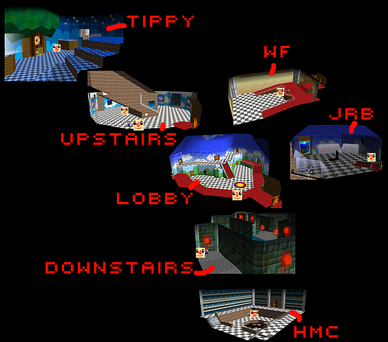
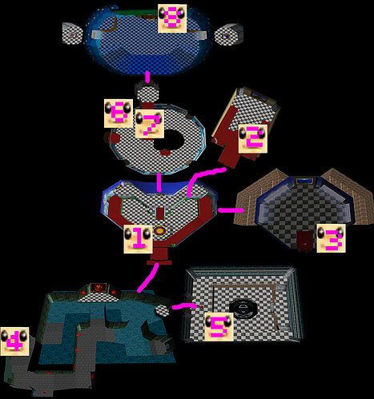

The goal is to talk to every toad then WDW clip on endless stairs. The timing starts on power on, or reset on emulator. You have to go through the "You will need a classic controller" screen on Wii VC | Project 1.6 and OpenEMU only | Time ends when you see lakitu in the bottom right turn into X after BLJ through endless stairs to wdw
For the regular Kokiri Toad, you need to talk to all the toads, beat the boss scuttlebug ("Nathan"), grab his star, and then grab the "SioN skip" Star. Timing starts on reset for everything and when the last star disappears, or for magic where you talk to the magic toad.
For the singlestars and magic, you need to get either the star or the magic bar as quick as possible.
2.0 map
3.0 map
